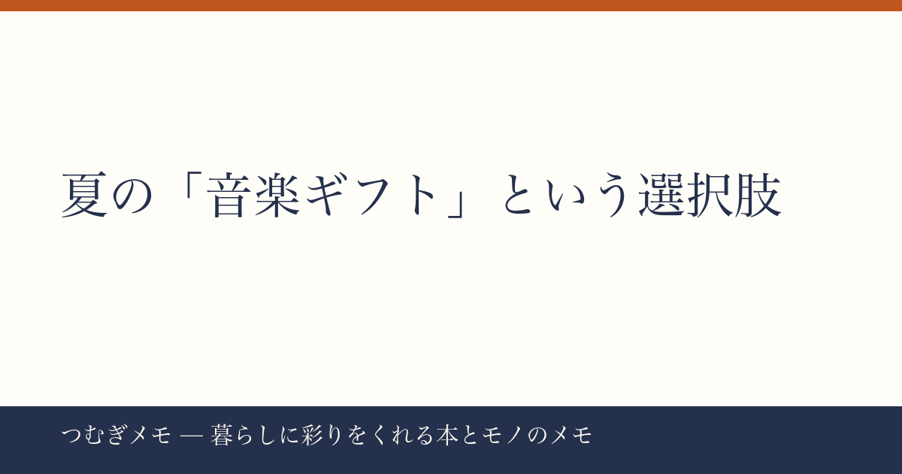

こんにちは、つむぎです。今週のXを眺めていて、ひとつの投稿がずっと頭に残っていました。
この記事でわかること: サブスク未加入の家族や友人に「聴かせたい曲がある」と思ったとき、今すぐできる最もシンプルな方法と、その選曲背景にある今夏の音楽トレンドを整理します。
今週の要点
- iTunes「ギフト購入」機能で特定の曲だけ相手のスマホに贈れる、という体験談がXで広がった
- SixTONESの「Dance Forever」「マイオンリー」は2曲合わせて500万回超再生を記録中
- "サブスクに入っていない家族"という切り口が、20〜40代の実感に刺さっている
---
今週Xで目に留まったのは、音楽サブスクに入っていない家族が車でSixTONESの「Dance Forever」と「マイオンリー」を聴きたがったことをきっかけに、iTunesのギフト機能を初めて使って贈ってみた、という投稿でした。500件を超えるいいねを集めたこの投稿が刺さったのは、「曲を聴かせたいのにサブスクの壁がある」という状況が、多くの人にとってリアルに身近だったからだと思います。
使い方はシンプルです。App StoreまたはiTunesでギフトしたい曲を開き、「ギフトとして贈る」を選んで相手のApple IDにメールを送るだけ。受け取った側はApple Musicに未加入でもダウンロードして聴けます。1曲あたり255円前後で手に入るので、「このアルバム1枚プレゼントするのはちょっと重い」「でもサブスクを勧めるのも押しつけがましい」という場面にちょうどいい塩梅です。
今日できる行動: 「最近気に入ってる曲あるよ」と言いたい相手を一人思い浮かべて、iTunes Storeでその曲の「ギフト」ボタンの場所だけ確認しておく。贈るかどうかは後で決めればいい。存在を知っているだけで選択肢が広がります。
---
ギフトされた2曲がどれだけ勢いのある楽曲かも整理しておきたいです。今週のYouTube急上昇データを見ると、SixTONESの「Dance Forever」が約162万回再生、「マイオンリー」が約350万回再生を記録しています。2曲合計で500万回超えというのは、単発ヒットではなく「今この瞬間に複数の楽曲が同時に伸びている」状態であることを示しています。
なぜ今これほど刺さっているのか。個人的には「夏と運動の相性」があると思っています。「Dance Forever」というタイトルが象徴するように、体を動かしたくなる季節に、ループして聴ける曲が求められる傾向があります。車内・ウォーキング・家事中、といった「画面を見ない状態」でのリスニングが夏は増えるため、動画よりも音だけで完結する体験の価値が上がります。サブスク未加入の家族が車でリクエストした、という投稿の状況は、まさにその典型でした。
今日できる行動: 「Dance Forever」と「マイオンリー」をYouTubeで1曲ずつ試聴して、どちらが「この夏の自分のBGM」に近いかを判断してみる。贈る前に自分が好きかどうかを確かめるのが、ギフト選びの基本です。
---
音楽ギフトの話を深掘りすると、これは単なる機能紹介ではなく、「何かを誰かと共有したい」という動機の話だと気づきます。本を人に贈ることが「自分の世界観を渡す行為」であるように、曲を贈ることも、その人との関係性や季節の記憶と結びつきます。
暮らしを豊かにするアイテムを探している人にとって、音楽は見落とされがちなカテゴリです。雑貨や本と違って「物理的に棚に並ばない」から実感しにくいのですが、影響力は同じかそれ以上です。1曲255円のギフトが、車の中でかかり続けて、その夏の記憶のBGMになることはあります。コスパという観点で見ても、かなり優れた「暮らしの彩り」になり得ます。
音楽との付き合い方を深めたいなら、サブスクを軸にするだけでなく、雑誌やカルチャー誌で特集を読む習慣もおすすめです。(PR) 音楽・映画・ライフスタイルを扱う雑誌を定期的に読みたい方は、Fujisan.co.jp 雑誌のオンライン書店を見るで最大70%割引の定期購読を探してみると、推しアーティストの特集号を安定してチェックできます。
今日できる行動: 「最後に音楽を誰かに勧めたのはいつか」を思い返してみる。ストリーミングのプレイリストを共有する、でもYouTubeのURLを送る、でも、今週の投稿のようにiTunesでギフトする、でもいい。手段はどれでも、「この曲を聴いてほしい」という気持ちが先にあれば十分です。
---
Q. iPhoneを持っていない家族にもiTunesギフトは贈れますか?
A. iTunesギフトの受け取りにはApple IDが必要なため、Androidユーザーには使えません。Androidを使っている家族や友人へは、Google Play Musicのギフトカードや、LINE MUSICのギフト機能が代替になります。相手の環境を確認してから贈り方を選ぶのがスムーズです。
Q. サブスクに入っていない人に音楽を届ける方法は他にありますか?
A. CDを贈るのは今でも有効な選択肢です。特に「1枚通して聴いてほしい」アルバムがある場合は、パッケージごと渡せるCDには固有の良さがあります。ギフトカードを選ぶかCDを選ぶかは、相手の好みや関係性に合わせて判断するのがベストです。
Q. 「贈り物」として音楽が成立するのはどんな場面ですか?
A. 誕生日や季節の節目に「最近これにハマってる」と一言添えて贈るのが自然です。今週の投稿のように「車でかけたい曲がある」という具体的なシーンが明確なときが、特に喜ばれやすいです。渡す理由は小さくていいし、大げさに説明しなくても「知ってたら贈っておきたかった」くらいの温度感が、音楽ギフトにはちょうど合っています。
---
今週は「1曲を贈る」という小さな行為から、夏の音楽体験と暮らしの豊かさを考えてみました。サブスクが当たり前になった時代だからこそ、「1曲だけ届ける」という選択肢の存在を知っておくと、ちょっとした場面で役に立ちます。
なお、このブログはAIと一緒に運営する実験メディアとして動かしています。記事の構成や視点の整理にAIを活用しつつ、書いている内容への共感と責任は僕自身のものです。感想や「こんなテーマ取り上げてほしい」はXの @tsumugi_memo15 まで気軽に送ってください。
📚 目次へ